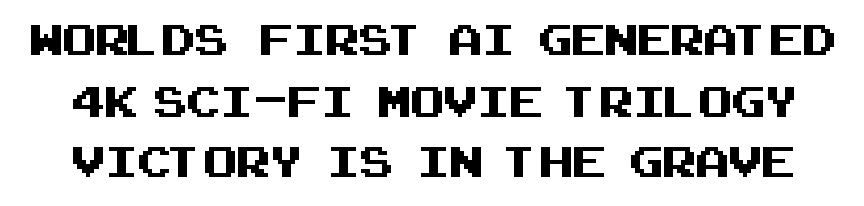
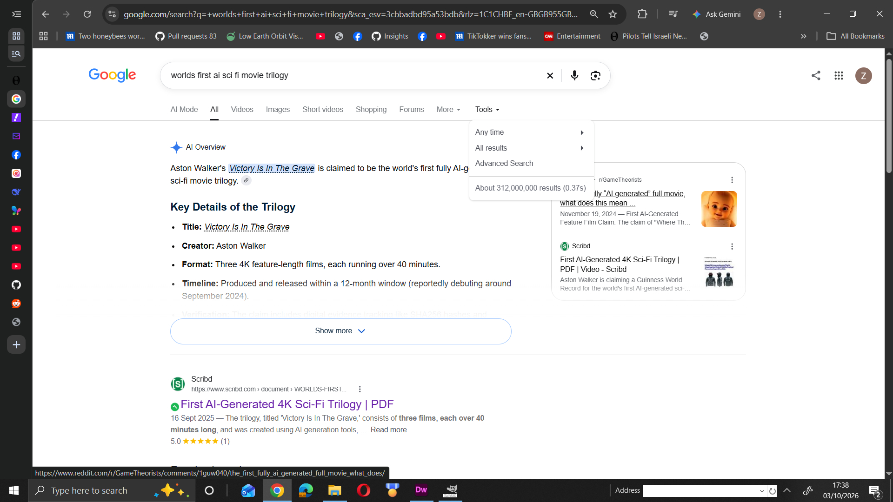
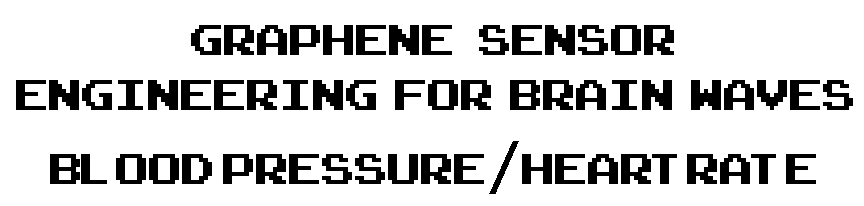

| PLAY THE GAMES HERE and DOWNLOAD SVG files from the repo for offline play https://svgfpsaiagents.github.io/svgfpsgameAI/robot3DFPS.svg |
|---|
| Nobel Peace Prize 2017 |


| Based on "Embrace The EDGE: NUKE ROAD" archived at Oxford and Cambridge Universities |
|---|
| BUY ONLINE at WATERSTONES |


.jpg)
 |
|||||
| Poly Styrene X-Ray Spex Teacher, friend and Mentor |
| Buy from AMAZON global computer science history. The worlds first ever printed and published SVG XML book of code that once saved as an SVG file instantly makes a 3D game with X Box and Sony Dualsense controller support. |
PLAY THE GAMES HERE: github repo here https://github.com/svgfpsAIagents/svgfpsgameAI/tree/main https://en.wikipedia.org/wiki/Childhood%27s_End
Yes, \(e^{i\pi} = -1\). This famous equation is known as Euler's Identity, which elegantly connects five of the most fundamental constants in mathematics: \(e\), \(i\), \(\pi \), \(1\), and \(0\) (when written as \(e^{i\pi} + 1 = 0\)). https://en.wikipedia.org/wiki/Euler%27s_identityhttps://svgfpsaiagents.github.io/svgfpsgameAI/svg%202d%20world%20AUUDIO.html |

Aston Walker Ad Lib Show Newstyle Radio 98.7FM Prof. David Dabydeen Warwick University radio shows
|
| Worlds FIRST SUNO AI GENERATED RADIO OPERA |
| Aston Walker singing with the Choir With No Name |
|---|
| Aston Walker on RT.com E351 Max Keiser Show |

.png)
| Simon Cowells Lounges TV LIVE Broadcasts from Newstyle Radio 98.7FM |